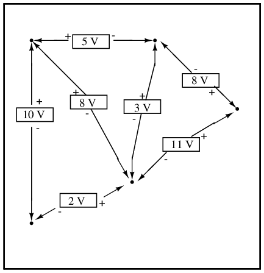
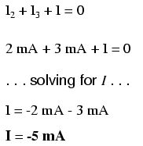

Let's analyze a simple series circuit, determining the voltage drops across individual resistors:
From the given values of individual resistances, we can determine a total circuit resistance, knowing that resistances add in series:
From here, we can use Ohm's Law (I=E/R) to determine the total current, which we know will be the same as each resistor current, currents being equal in all parts of a series circuit:
Now, knowing that the circuit current is 2 mA, we can use Ohm's Law (E=IR) to calculate voltage across each resistor:
It should be apparent that the voltage drop across each resistor is proportional to its resistance, given that the current is the same through all resistors. Notice how the voltage across R2 is double that of the voltage across R1, just as the resistance of R2 is double that of R1.
If we were to change the total voltage, we would find this proportionality of voltage drops remains constant:
The voltage across R2 is still exactly twice that of R1's drop, despite the fact that the source voltage has changed. The proportionality of voltage drops (ratio of one to another) is strictly a function of resistance values.
With a little more observation, it becomes apparent that the voltage drop across each resistor is also a fixed proportion of the supply voltage. The voltage across R1, for example, was 10 volts when the battery supply was 45 volts. When the battery voltage was increased to 180 volts (4 times as much), the voltage drop across R1 also increased by a factor of 4 (from 10 to 40 volts). The ratio between R1's voltage drop and total voltage, however, did not change:
Likewise, none of the other voltage drop ratios changed with the increased supply voltage either:
For this reason a series circuit is often called a voltage divider for its ability to proportion -- or divide -- the total voltage into fractional portions of constant ratio. With a little bit of algebra, we can derive a formula for determining series resistor voltage drop given nothing more than total voltage, individual resistance, and total resistance:
The ratio of individual resistance to total resistance is the same as the ratio of individual voltage drop to total supply voltage in a voltage divider circuit. This is known as the voltage divider formula, and it is a short-cut method for determining voltage drop in a series circuit without going through the current calculation(s) of Ohm's Law.
Using this formula, we can re-analyze the example circuit's voltage drops in fewer steps:
Voltage dividers find wide application in electric meter circuits, where specific combinations of series resistors are used to "divide" a voltage into precise proportions as part of a voltage measurement device.
One device frequently used as a voltage-dividing component is the potentiometer, which is a resistor with a movable element positioned by a manual knob or lever. The movable element, typically called a wiper, makes contact with a resistive strip of material (commonly called the slidewire if made of resistive metal wire) at any point selected by the manual control:
The wiper contact is the left-facing arrow symbol drawn in the middle of the vertical resistor element. As it is moved up, it contacts the resistive strip closer to terminal 1 and further away from terminal 2, lowering resistance to terminal 1 and raising resistance to terminal 2. As it is moved down, the opposite effect results. The resistance as measured between terminals 1 and 2 is constant for any wiper position.
Shown here are internal illustrations of two potentiometer types, rotary and linear:
Some linear potentiometers are actuated by straight-line motion of a lever or slide button. Others, like the one depicted in the previous illustration, are actuated by a turn-screw for fine adjustment ability. The latter units are sometimes referred to as trimpots, because they work well for applications requiring a variable resistance to be "trimmed" to some precise value. It should be noted that not all linear potentiometers have the same terminal assignments as shown in this illustration. With some, the wiper terminal is in the middle, between the two end terminals.
The following photograph shows a real, rotary potentiometer with exposed wiper and slidewire for easy viewing. The shaft which moves the wiper has been turned almost fully clockwise so that the wiper is nearly touching the left terminal end of the slidewire:
Here is the same potentiometer with the wiper shaft moved almost to the full-counterclockwise position, so that the wiper is near the other extreme end of travel:

If a constant voltage is applied between the outer terminals (across the length of the slidewire), the wiper position will tap off a fraction of the applied voltage, measurable between the wiper contact and either of the other two terminals. The fractional value depends entirely on the physical position of the wiper:
Just like the fixed voltage divider, the potentiometer's voltage division ratio is strictly a function of resistance and not of the magnitude of applied voltage. In other words, if the potentiometer knob or lever is moved to the 50 percent (exact center) position, the voltage dropped between wiper and either outside terminal would be exactly 1/2 of the applied voltage, no matter what that voltage happens to be, or what the end-to-end resistance of the potentiometer is. In other words, a potentiometer functions as a variable voltage divider where the voltage division ratio is set by wiper position.
This application of the potentiometer is a very useful means of obtaining a variable voltage from a fixed-voltage source such as a battery. If a circuit you're building requires a certain amount of voltage that is less than the value of an available battery's voltage, you may connect the outer terminals of a potentiometer across that battery and "dial up" whatever voltage you need between the potentiometer wiper and one of the outer terminals for use in your circuit:
When used in this manner, the name potentiometer makes perfect sense: they meter (control) the potential (voltage) applied across them by creating a variable voltage-divider ratio. This use of the three-terminal potentiometer as a variable voltage divider is very popular in circuit design.
Shown here are several small potentiometers of the kind commonly used in consumer electronic equipment and by hobbyists and students in constructing circuits:
The smaller units on the very left and very right are designed to plug into a solderless breadboard or be soldered into a printed circuit board. The middle units are designed to be mounted on a flat panel with wires soldered to each of the three terminals.
Here are three more potentiometers, more specialized than the set just shown:
The large "Helipot" unit is a laboratory potentiometer designed for quick and easy connection to a circuit. The unit in the lower-left corner of the photograph is the same type of potentiometer, just without a case or 10-turn counting dial. Both of these potentiometers are precision units, using multi-turn helical-track resistance strips and wiper mechanisms for making small adjustments. The unit on the lower-right is a panel-mount potentiometer, designed for rough service in industrial applications.
Let's take another look at our example series circuit, this time numbering the points in the circuit for voltage reference:
If we were to connect a voltmeter between points 2 and 1, red test lead to point 2 and black test lead to point 1, the meter would register +45 volts. Typically the "+" sign is not shown, but rather implied, for positive readings in digital meter displays. However, for this lesson the polarity of the voltage reading is very important and so I will show positive numbers explicitly:
When a voltage is specified with a double subscript (the characters "2-1" in the notation "E2-1"), it means the voltage at the first point (2) as measured in reference to the second point (1). A voltage specified as "Ecd" would mean the voltage as indicated by a digital meter with the red test lead on point "c" and the black test lead on point "d": the voltage at "c" in reference to "d".
If we were to take that same voltmeter and measure the voltage drop across each resistor, stepping around the circuit in a clockwise direction with the red test lead of our meter on the point ahead and the black test lead on the point behind, we would obtain the following readings:
We should already be familiar with the general principle for series circuits stating that individual voltage drops add up to the total applied voltage, but measuring voltage drops in this manner and paying attention to the polarity (mathematical sign) of the readings reveals another facet of this principle: that the voltages measured as such all add up to zero:
This principle is known as Kirchhoff's Voltage Law (discovered in 1847 by Gustav R. Kirchhoff, a German physicist), and it can be stated as such:
"The algebraic sum of all voltages in a loop must equal zero"
By algebraic, I mean accounting for signs (polarities) as well as magnitudes. By loop, I mean any path traced from one point in a circuit around to other points in that circuit, and finally back to the initial point. In the above example the loop was formed by following points in this order: 1-2-3-4-1. It doesn't matter which point we start at or which direction we proceed in tracing the loop; the voltage sum will still equal zero. To demonstrate, we can tally up the voltages in loop 3-2-1-4-3 of the same circuit:
This may make more sense if we re-draw our example series circuit so that all components are represented in a straight line:
It's still the same series circuit, just with the components arranged in a different form. Notice the polarities of the resistor voltage drops with respect to the battery: the battery's voltage is negative on the left and positive on the right, whereas all the resistor voltage drops are oriented the other way: positive on the left and negative on the right. This is because the resistors are resisting the flow of electrons being pushed by the battery. In other words, the "push" exerted by the resistors against the flow of electrons must be in a direction opposite the source of electromotive force.
Here we see what a digital voltmeter would indicate across each component in this circuit, black lead on the left and red lead on the right, as laid out in horizontal fashion:
If we were to take that same voltmeter and read voltage across combinations of components, starting with only R1 on the left and progressing across the whole string of components, we will see how the voltages add algebraically (to zero):
The fact that series voltages add up should be no mystery, but we notice that the polarity of these voltages makes a lot of difference in how the figures add. While reading voltage across R1, R1--R2, and R1--R2--R3 (I'm using a "double-dash" symbol "--" to represent the series connection between resistors R1, R2, and R3), we see how the voltages measure successively larger (albeit negative) magnitudes, because the polarities of the individual voltage drops are in the same orientation (positive left, negative right). The sum of the voltage drops across R1, R2, and R3 equals 45 volts, which is the same as the battery's output, except that the battery's polarity is opposite that of the resistor voltage drops (negative left, positive right), so we end up with 0 volts measured across the whole string of components.
That we should end up with exactly 0 volts across the whole string should be no mystery, either. Looking at the circuit, we can see that the far left of the string (left side of R1: point number 2) is directly connected to the far right of the string (right side of battery: point number 2), as necessary to complete the circuit. Since these two points are directly connected, they are electrically common to each other. And, as such, the voltage between those two electrically common points must be zero.
Kirchhoff's Voltage Law (sometimes denoted as KVL for short) will work for any circuit configuration at all, not just simple series. Note how it works for this parallel circuit:
Being a parallel circuit, the voltage across every resistor is the same as the supply voltage: 6 volts. Tallying up voltages around loop 2-3-4-5-6-7-2, we get:
Note how I label the final (sum) voltage as E2-2. Since we began our loop-stepping sequence at point 2 and ended at point 2, the algebraic sum of those voltages will be the same as the voltage measured between the same point (E2-2), which of course must be zero.
The fact that this circuit is parallel instead of series has nothing to do with the validity of Kirchhoff's Voltage Law. For that matter, the circuit could be a "black box" -- its component configuration completely hidden from our view, with only a set of exposed terminals for us to measure voltage between -- and KVL would still hold true:

Try any order of steps from any terminal in the above diagram, stepping around back to the original terminal, and you'll find that the algebraic sum of the voltages always equals zero.
Furthermore, the "loop" we trace for KVL doesn't even have to be a real current path in the closed-circuit sense of the word. All we have to do to comply with KVL is to begin and end at the same point in the circuit, tallying voltage drops and polarities as we go between the next and the last point. Consider this absurd example, tracing "loop" 2-3-6-3-2 in the same parallel resistor circuit:
KVL can be used to determine an unknown voltage in a complex circuit, where all other voltages around a particular "loop" are known. Take the following complex circuit (actually two series circuits joined by a single wire at the bottom) as an example:
To make the problem simpler, I've omitted resistance values and simply given voltage drops across each resistor. The two series circuits share a common wire between them (wire 7-8-9-10), making voltage measurements between the two circuits possible. If we wanted to determine the voltage between points 4 and 3, we could set up a KVL equation with the voltage between those points as the unknown:
Stepping around the loop 3-4-9-8-3, we write the voltage drop figures as a digital voltmeter would register them, measuring with the red test lead on the point ahead and black test lead on the point behind as we progress around the loop. Therefore, the voltage from point 9 to point 4 is a positive (+) 12 volts because the "red lead" is on point 9 and the "black lead" is on point 4. The voltage from point 3 to point 8 is a positive (+) 20 volts because the "red lead" is on point 3 and the "black lead" is on point 8. The voltage from point 8 to point 9 is zero, of course, because those two points are electrically common.
Our final answer for the voltage from point 4 to point 3 is a negative (-) 32 volts, telling us that point 3 is actually positive with respect to point 4, precisely what a digital voltmeter would indicate with the red lead on point 4 and the black lead on point 3:

In other words, the initial placement of our "meter leads" in this KVL problem was "backwards." Had we generated our KVL equation starting with E3-4 instead of E4-3, stepping around the same loop with the opposite meter lead orientation, the final answer would have been E3-4 = +32 volts:
It is important to realize that neither approach is "wrong." In both cases, we arrive at the correct assessment of voltage between the two points, 3 and 4: point 3 is positive with respect to point 4, and the voltage between them is 32 volts.
Let's analyze a simple parallel circuit, determining the branch currents through individual resistors:
Knowing that voltages across all components in a parallel circuit are the same, we can fill in our voltage/current/resistance table with 6 volts across the top row:
Using Ohm's Law (I=E/R) we can calculate each branch current:
Knowing that branch currents add up in parallel circuits to equal the total current, we can arrive at total current by summing 6 mA, 2 mA, and 3 mA:
The final step, of course, is to figure total resistance. This can be done with Ohm's Law (R=E/I) in the "total" column, or with the parallel resistance formula from individual resistances. Either way, we'll get the same answer:
Once again, it should be apparent that the current through each resistor is related to its resistance, given that the voltage across all resistors is the same. Rather than being directly proportional, the relationship here is one of inverse proportion. For example, the current through R1 is twice as much as the current through R3, which has twice the resistance of R1.
If we were to change the supply voltage of this circuit, we find that (surprise!) these proportional ratios do not change:
The current through R1 is still exactly twice that of R3, despite the fact that the source voltage has changed. The proportionality between different branch currents is strictly a function of resistance.
Also reminiscent of voltage dividers is the fact that branch currents are fixed proportions of the total current. Despite the fourfold increase in supply voltage, the ratio between any branch current and the total current remains unchanged:
For this reason a parallel circuit is often called a current divider for its ability to proportion -- or divide -- the total current into fractional parts. With a little bit of algebra, we can derive a formula for determining parallel resistor current given nothing more than total current, individual resistance, and total resistance:
The ratio of total resistance to individual resistance is the same ratio as individual (branch) current to total current. This is known as the current divider formula, and it is a short-cut method for determining branch currents in a parallel circuit when the total current is known.
Using the original parallel circuit as an example, we can re-calculate the branch currents using this formula, if we start by knowing the total current and total resistance:
If you take the time to compare the two divider formulae, you'll see that they are remarkably similar. Notice, however, that the ratio in the voltage divider formula is Rn (individual resistance) divided by RTotal, and how the ratio in the current divider formula is RTotal divided by Rn:
It is quite easy to confuse these two equations, getting the resistance ratios backwards. One way to help remember the proper form is to keep in mind that both ratios in the voltage and current divider equations must equal less than one. After all these are divider equations, not multiplier equations! If the fraction is upside-down, it will provide a ratio greater than one, which is incorrect. Knowing that total resistance in a series (voltage divider) circuit is always greater than any of the individual resistances, we know that the fraction for that formula must be Rn over RTotal. Conversely, knowing that total resistance in a parallel (current divider) circuit is always less then any of the individual resistances, we know that the fraction for that formula must be RTotal over Rn.
Current divider circuits also find application in electric meter circuits, where a fraction of a measured current is desired to be routed through a sensitive detection device. Using the current divider formula, the proper shunt resistor can be sized to proportion just the right amount of current for the device in any given instance:

Let's take a closer look at that last parallel example circuit:
Solving for all values of voltage and current in this circuit:
At this point, we know the value of each branch current and of the total current in the circuit. We know that the total current in a parallel circuit must equal the sum of the branch currents, but there's more going on in this circuit than just that. Taking a look at the currents at each wire junction point (node) in the circuit, we should be able to see something else:
At each node on the negative "rail" (wire 8-7-6-5) we have current splitting off the main flow to each successive branch resistor. At each node on the positive "rail" (wire 1-2-3-4) we have current merging together to form the main flow from each successive branch resistor. This fact should be fairly obvious if you think of the water pipe circuit analogy with every branch node acting as a "tee" fitting, the water flow splitting or merging with the main piping as it travels from the output of the water pump toward the return reservoir or sump.
If we were to take a closer look at one particular "tee" node, such as node 3, we see that the current entering the node is equal in magnitude to the current exiting the node:
From the right and from the bottom, we have two currents entering the wire connection labeled as node 3. To the left, we have a single current exiting the node equal in magnitude to the sum of the two currents entering. To refer to the plumbing analogy: so long as there are no leaks in the piping, what flow enters the fitting must also exit the fitting. This holds true for any node ("fitting"), no matter how many flows are entering or exiting. Mathematically, we can express this general relationship as such:
Mr. Kirchhoff decided to express it in a slightly different form (though mathematically equivalent), calling it Kirchhoff's Current Law (KCL):
Summarized in a phrase, Kirchhoff's Current Law reads as such:
"The algebraic sum of all currents entering and exiting a node must equal zero"
That is, if we assign a mathematical sign (polarity) to each current, denoting whether they enter (+) or exit (-) a node, we can add them together to arrive at a total of zero, guaranteed.
Taking our example node (number 3), we can determine the magnitude of the current exiting from the left by setting up a KCL equation with that current as the unknown value:

The negative (-) sign on the value of 5 milliamps tells us that the current is exiting the node, as opposed to the 2 milliamp and 3 milliamp currents, which must both be positive (and therefore entering the node). Whether negative or positive denotes current entering or exiting is entirely arbitrary, so long as they are opposite signs for opposite directions and we stay consistent in our notation, KCL will work.
Together, Kirchhoff's Voltage and Current Laws are a formidable pair of tools useful in analyzing electric circuits. Their usefulness will become all the more apparent in a later chapter ("Network Analysis"), but suffice it to say that these Laws deserve to be memorized by the electronics student every bit as much as Ohm's Law.
Contributors to this chapter are listed in chronological order of their contributions, from most recent to first. See Appendix 2 (Contributor List) for dates and contact information.
Jason Starck (June 2000): HTML document formatting, which led to a much better-looking second edition.
Ron LaPlante (October 1998): helped create "table" method of series and parallel circuit analysis.
Lessons In Electric Circuits copyright (C) 2000-2023 Tony R. Kuphaldt, under the terms and conditions of the CC BY License.